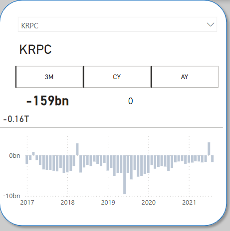
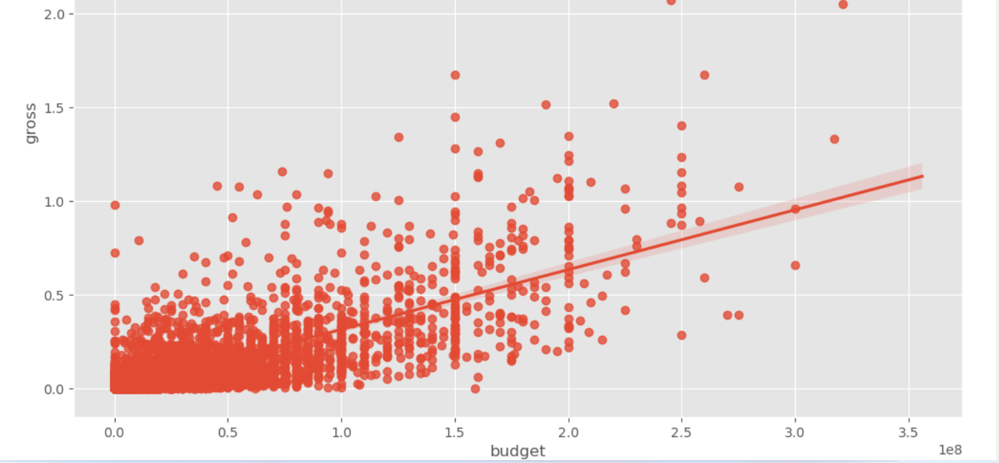

Portfolio by Practice Area
The current public portfolio is strongest in analytics, includes a focused set of modeling work, and now separates engineering-adjacent projects without forcing dashboards into the wrong category.

Data Analyst, Data Scientist, and Data Engineering professional with hands-on experience in SQL, Power BI, Excel, Python, and workflow-oriented data preparation. This portfolio organizes my published projects by discipline so each case study sits in the section that best reflects its actual strengths.
The current public portfolio is strongest in analytics, includes a focused set of modeling work, and now separates engineering-adjacent projects without forcing dashboards into the wrong category.


Dashboarding, business storytelling, SQL exploration, KPI design, and insight generation across healthcare, retail, energy, and workforce data.

Python-led analysis, predictive modeling, and statistical investigation with a focus on feature exploration, patterns, and model-ready datasets.

This track highlights the published work with the strongest SQL, transformation, cleaning, and model-ready preparation components while dedicated pipeline case studies are still being added.
Current mapping: six analytics-first projects, two data-science projects, and three engineering-adjacent projects where data preparation and transformation are central to the workflow.